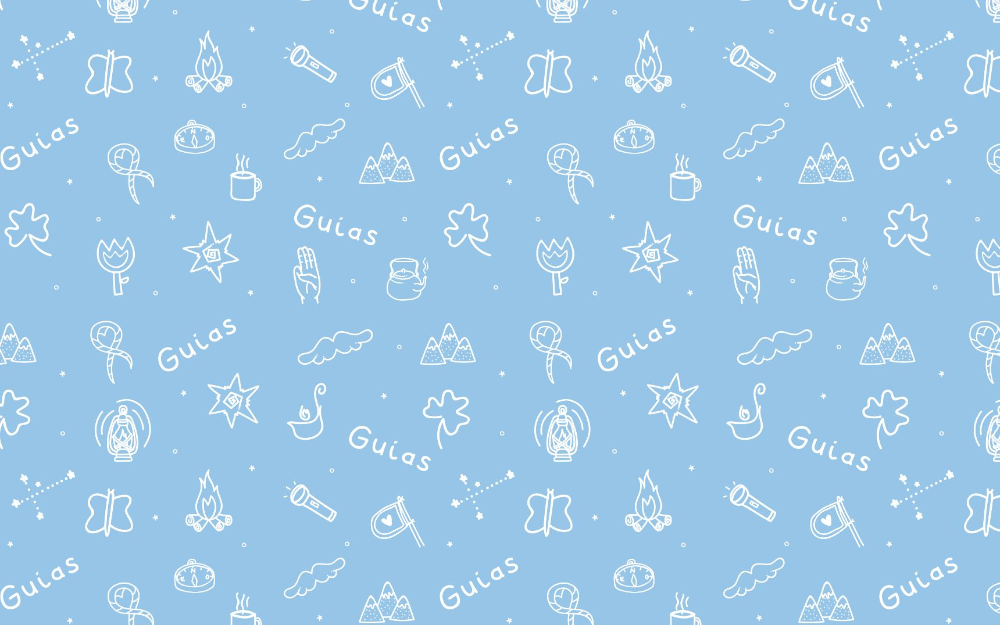
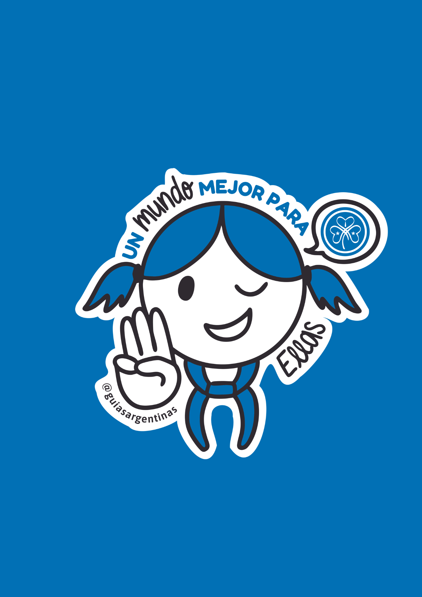
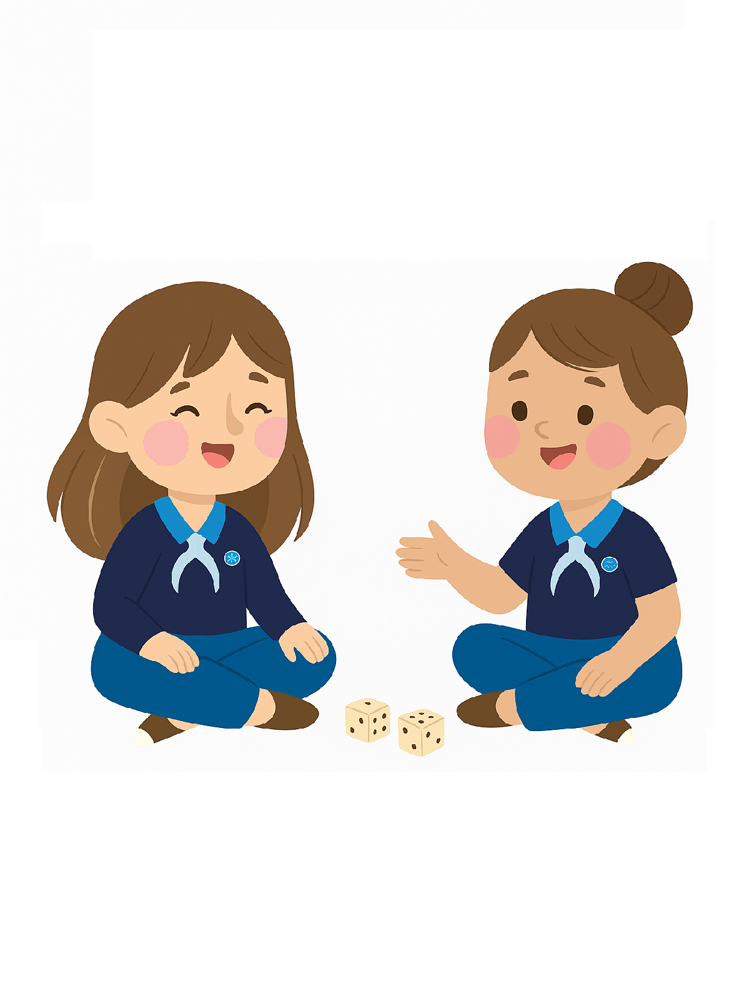

Programa Nacional
Inicio
Ramas ▾
Pimpollitos
Alitas
Guías en Caravana
Guías del Sol
Guías Mayores
Mariposas
Comités ▾
Comité de Espiritualidad
Comité de STEM
Comité de Libre de Ser Yo
Material de Programa

Guías en Caravana
Recursos para actividades
Manual de la Guiadora
Registro de Progresión
Cartelera de Intercambio
Cargando recursos...
Programa de educación Financiera
Programa "Cortá la brecha"

Revisión de Programa para Beneficiarias

Banco de Imágenes para Voluntarias
×